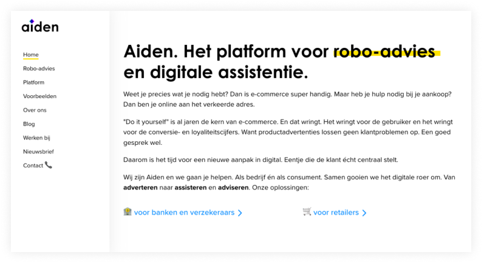
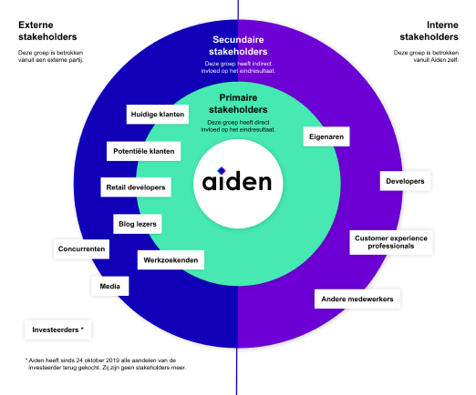
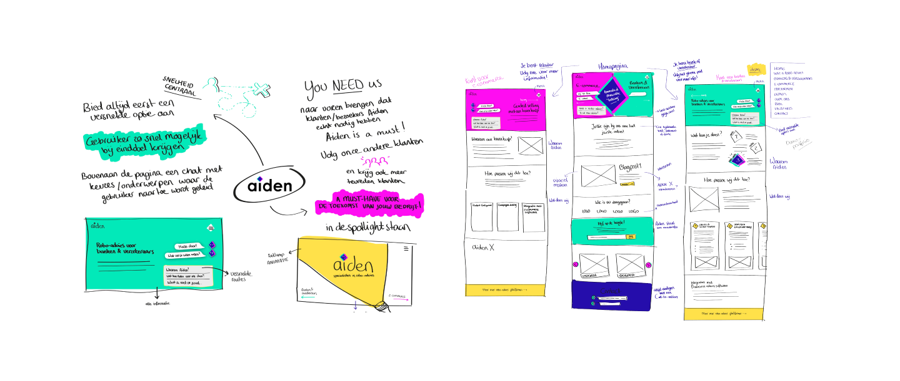
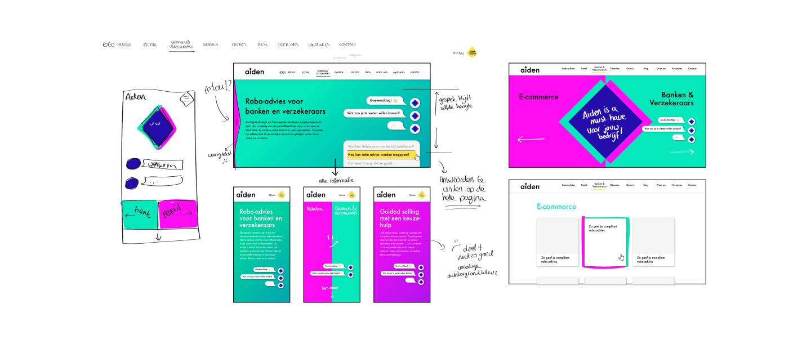
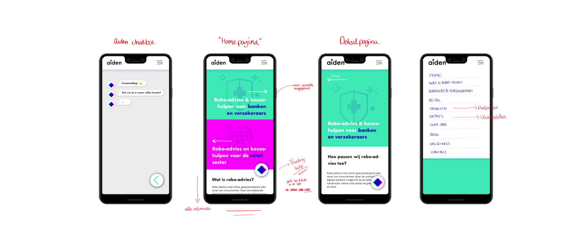
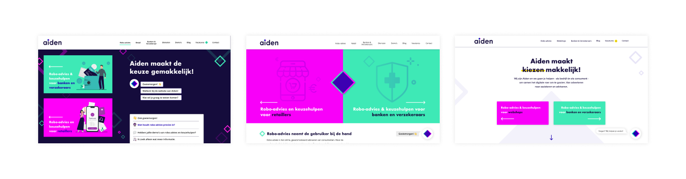

De opdracht
Aiden vroeg om een redesign van hun huidige website, waarbij het doel is om de visie “mensen online meer bijdehand nemen” ook beter uit te stralen op hun eigen website.
Stakeholders
We hebben de stakeholders in kaart gebracht door middel van deze map. Hierdoor wisten we goed met welke eindgebruikers wij te maken hadden en met wie we rekening moesten houden bij het redesignen van de website.
Schetsen
In de eerste fase van het project zijn we met het team gaan schetsen. Hoe kunnen we de gebruikers meteen naar hun doel brengen?
Uitwerken
Er bestond een tweedeling in doelgroep van Aiden, namelijk de retaillers en bank & verzekeraars. Omdat we beide zo snel mogelijk naar hun doel willen sturen, hebben we in de header al een onderscheid gemaakt. De twee kleuren uit het logo waren goed in te zetten voor meerdere doeleinden.
Mobiel
Tegenwoordig wordt er vaak ontworpen vanuit het formaat van mobiel. Deze zijn we dan ook zeker niet vergeten. Alles schaalt hier terug naar 1 kolom waardoor de twee doelgroepen onder elkaar komen te staan.
Headers
We hebben meermaals naar de header gekeken en aanpassingen aan gedaan. We hebben een bold versie gemaakt waar de neon kleuren goed tot zijn recht komen op de donkere achtergrond, maar ook versies gemaakt die rustiger waren. De klant wilde 'bijdehand' uitstralen, maar toch het overzicht bewaren. Daarom zijn ze voor de rechter versie gegaan. De titel springt er goed uit en de bezoeker weet gelijk waar hij heen kan.
